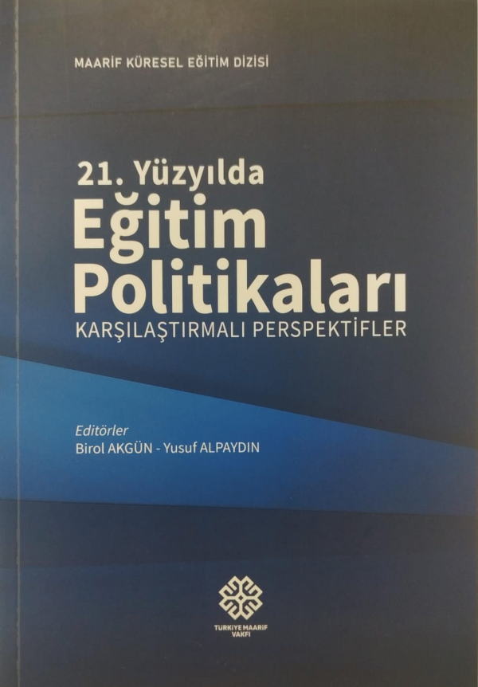
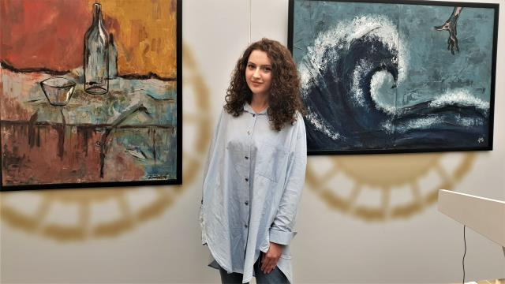
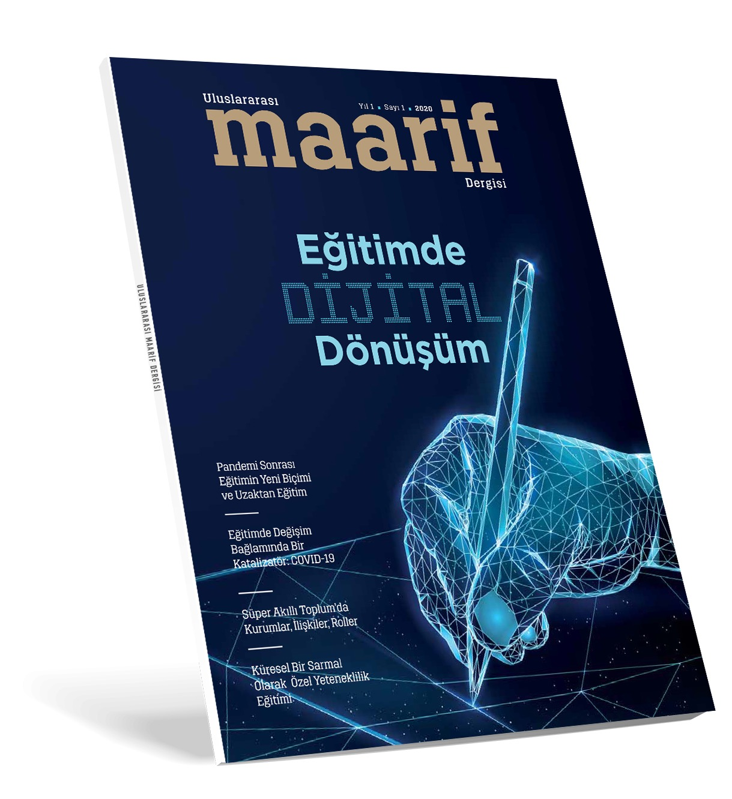
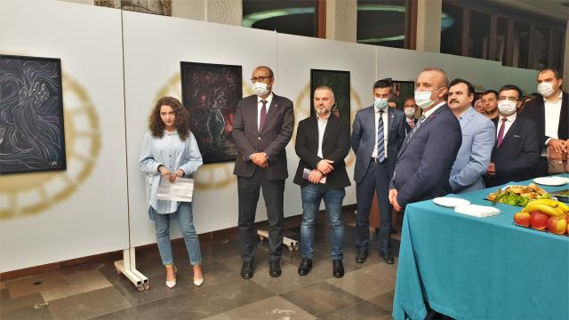
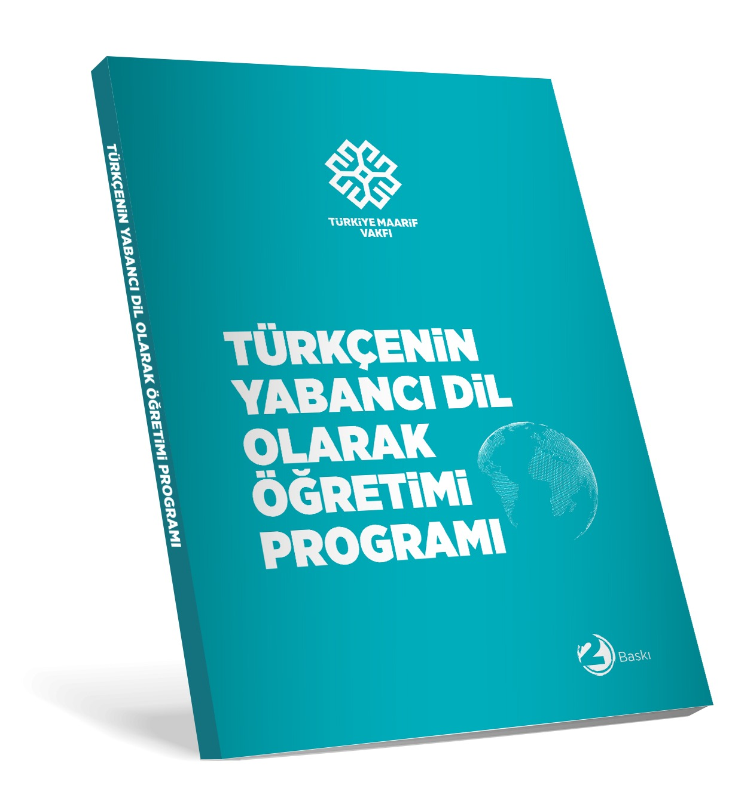
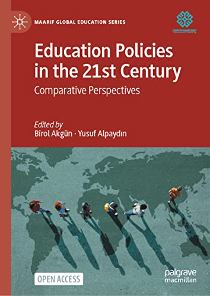
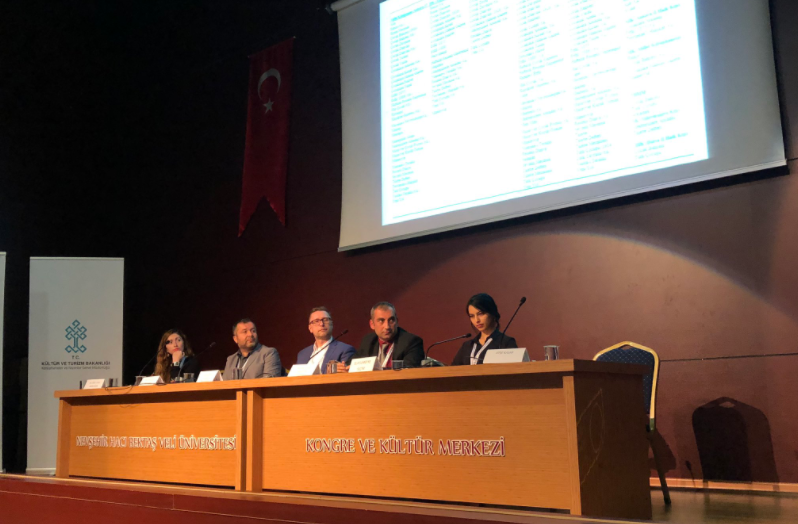
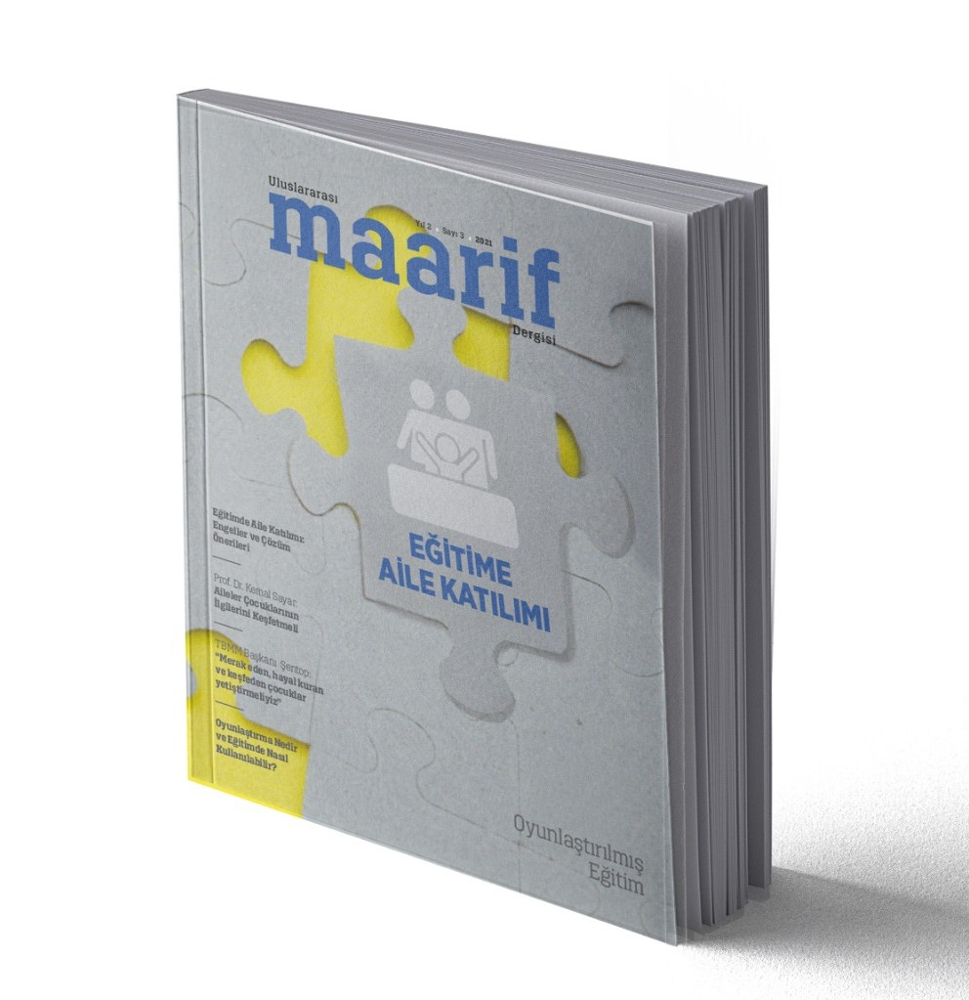

Türkiye Maarif Vakfı Kütüphaneleri
Bugün rafta ne arıyorsun?
- 107
- kütüphane
- 38
- ülke, tek katalog
070 · Haberler
Duyurular
Kütüphanecinin seçimi
Bu ay öne çıkanlar
Kütüphanecilerimizin okurlara önerdiği kaynaklar. Kapağa tıklayarak katalog kaydını açabilirsiniz.
Dolaşımda en çok
Çok okunanlar

Örnek Kitap 12
Yazar Adı

Örnek Kitap 11
Yazar Adı

Örnek Kitap 10
Yazar Adı

Örnek Kitap 9
Yazar Adı

Örnek Kitap 8
Yazar Adı

Örnek Kitap 7
Yazar Adı

Örnek Kitap 6
Yazar Adı

Örnek Kitap 5
Yazar Adı

Örnek Kitap 4
Yazar Adı

Örnek Kitap 3
Yazar Adı

Örnek Kitap 2
Yazar Adı

Örnek Kitap 1
Yazar Adı
Son eklenenler
Yeni gelenler
027 · Kütüphanelerimiz
38 ülkede 107 kütüphane
Pakistan26/ Afganistan15/ Kamerun5/ Mali5/ Tanzanya5/ Gine4/ Senegal4/ Irak3/ Somali3/ Arnavutluk2/ Çad2/ Kosova2/ Kuzey Makedonya2/ Moritanya2/ Nijer2/ Sudan2/ Venezuela2/ Amerika Birleşik Devletleri1/ Avustralya1/ Bosna-Hersek1/ Burundi1/ Cibuti1/ Ekvator Ginesi1/ Etiyopya1/ Fildişi Sahili1/ Gabon1/ Gambiya1/ Gana1/ Gürcistan1/ Kongo Cumhuriyeti1/ Kongo Demokratik Cumhuriyeti1/ Macaristan1/ Madagaskar1/ Romanya1/ São Tomé ve Príncipe1/ Sierra Leone1/ Tunus1/ Türkiye1